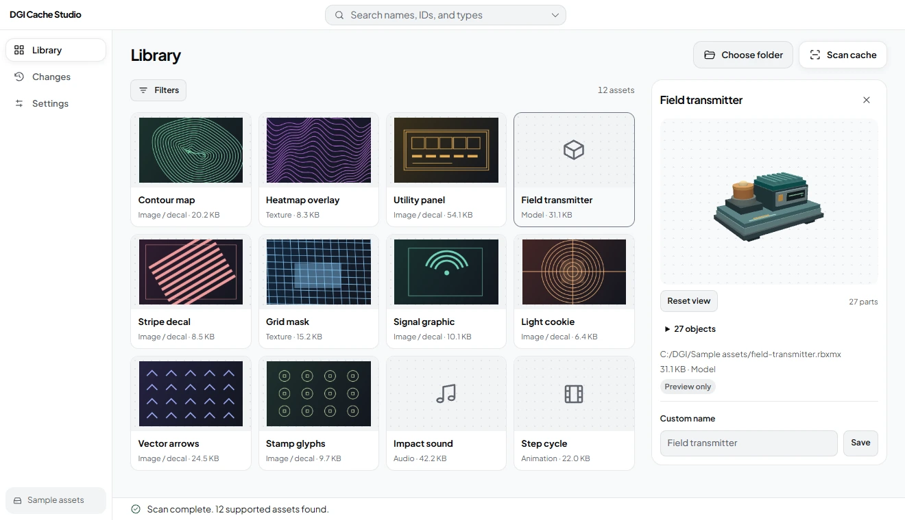

DGI Cache Studio
Browse the local Roblox cache on Windows. Preview images, audio, models, and animations in one Library.
Windows x64. GitHub repository access required.

Asset Previews
Search by name, asset ID where available, or type. Select a result to inspect it in the Library.
-
Images & Textures
Browse thumbnails and open supported textures at a larger size.
-
Audio
Play supported clips and seek to the part you want to hear.
-
Meshes & Models
Rotate and zoom supported meshes and models with saved geometry.
-
Animations
Scrub supported Roblox KeyframeSequences on an R6 or R15 preview rig.


Local Workspace
Keep an editable copy of a supported asset alongside the files you import.
- Find the cache
- Let DGI find the Roblox cache or choose a folder with exported assets.
- Inspect an asset
- Filter the Library by type and give the assets you use recognizable names.
- Make a working copy
- Use the editing workspace to keep local copies together. Restore a backed-up original from Changes.
Before You Install
What does DGI need on Windows?
DGI uses Microsoft Edge WebView2. 3D previews require WebGL 2, and audio playback depends on the codecs your WebView supports.
Do I need a Roblox API key?
You can browse and preview local files without a key. Requests to Roblox Asset Delivery require a Roblox Open Cloud key with permission for those requests.
Why do some assets only show details?
Some saved Roblox objects reference separate files. When renderable data is unavailable, DGI shows available object information and asset references.
Where are my workspace files and backups?
DGI stores working files and backups in its app data folder on your PC. Open the editing workspace from the Changes page.
Get DGI Cache Studio
Open a successful Windows build and download the DGI-windows-x64 artifact. Sign in with a GitHub account that has access to the repository.